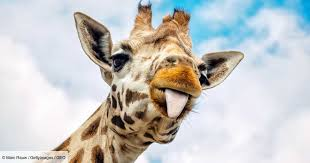

Girafe
Prénom : Giganda
Race : Giraffa camelopardalis -girafe d'Afrique
Habitat : savane africaine
La girafe est un mammifère ongulé qui possède des talons à ses pieds. Doté de grandes jambes et surtout d'un très long cou, elle mesure jusqu'à 5,50 mètres. Un individu pèse en moyenne 1 tonne pour un mâle et 600 kg pour une femelle. La girafe possède un pelage reconnaissable, avec des taches rousses sur fond blanc. Sur sa tête se dressent deux petites cornes couvertes de peau. Elle a aussi une fine queue qui mesure de 70 à 100 cm. Cet animal court en moyenne à la vitesse de 15 km/h mais peut faire des pointes à 55 km/h.